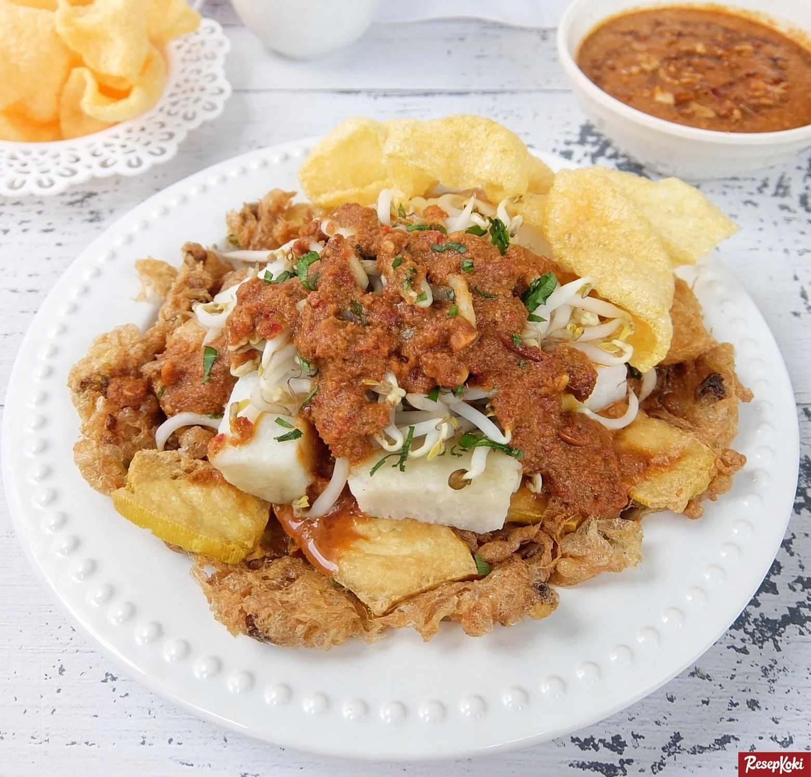

< back
Tahu Telor

Sebuah resep rahasia Tahu Telor
Alat dan Bahan
- Telur
- Tahu
- Kacang Tanah
- Bawang Putih
- Bawang Merah
- Cabai
- Gula Merah
- Kecap
- Petis
- Tauge
- Seledri
Cara Pembuatan
Bumbu
- Goreng kacang tanah hingga wangi
- Campurkan kacang tanah yang telah digoreng dengan bawang putih, bawang merah, cabai, gula merah, dan petis
- Uleg hingga halus dan tercampur merata
- Bumbu sudah siap
Tahu Telur
- Potong tahu menjadi seukuran dadu
- Goreng tahu yang telah dipotong hingga setengah matang
- Kocok lepas telur hingga menyatu
- Masukkan tahu yang telah digoreng ke dalam kocokan telur
- Goreng tahu dan telur hingga kecoklatan
Penyajian
- Taruh telur ke atas piring
- Bubuhkan tauge dan potongan seledri di atas tahu telur
- Siram tahu telur dengan bumbu
- Tambahkan nasi atau lontong sesuai selera